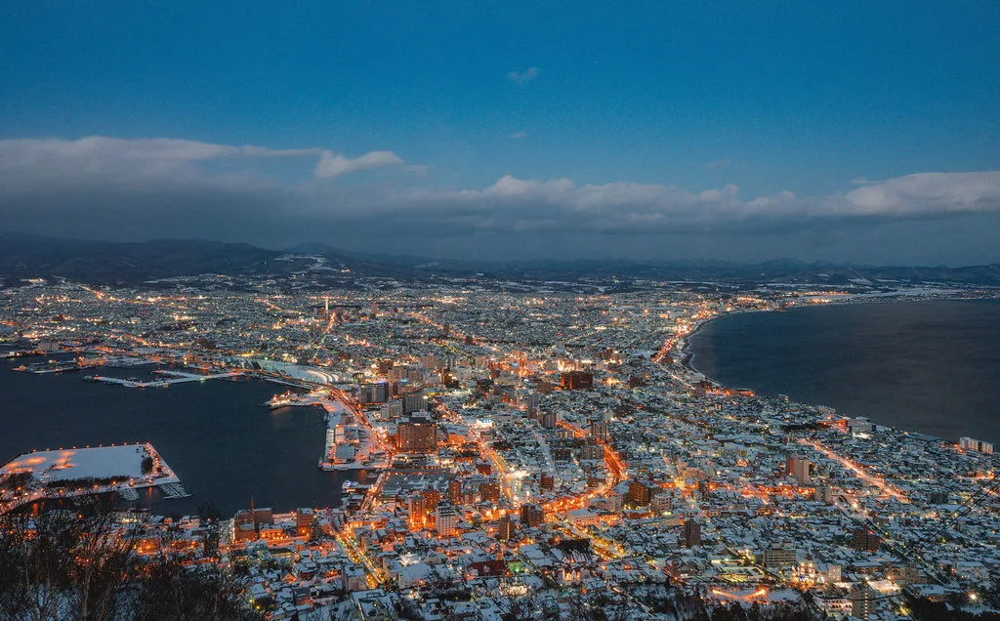

Hakodate: Where Japan First Opened to the World
Last reviewed: February 2026
Key Facts
- Country
- Japan (Hokkaido)
- Region
- Northern Japan / Southern Hokkaido
- Port
- Hakodate Port Terminal — ships dock adjacent to the Red Brick Warehouses, walkable to the city center
- Currency
- Japanese Yen (JPY); many vendors cash-only; international ATMs at 7-Eleven and post offices
- Language
- Japanese; limited English signage outside major tourist sites
- Climate
- Humid continental — warm summers (20-25C), cold snowy winters (0 to -5C), mild spring and autumn
My Visit to Hakodate
We approached Hakodate at dawn, and the first thing I saw was the mountain — Mount Hakodate, a perfect 334-meter rounded sentinel rising from the southern tip of Hokkaido, silhouetted against a sky brushed with pink and gold. This was one of the first Japanese ports opened to foreign trade under the Treaty of Kanagawa in 1854, and standing on the deck as we glided into harbor, I felt the weight of that history. This is where Japan's long isolation ended, where East met West on cobblestones still worn smooth by centuries of footsteps.
We docked right downtown — no tenders, no waiting, just stepping off the ship into the heart of this living, breathing port city. By 5:30 in the morning, I was walking through the Hakodate Morning Market — Asaichi — a sprawling wonderland of seafood that has operated in this spot since 1945. More than 250 stalls crowd the covered alleys, and the air is thick with salt spray, steam from bubbling pots, and the calls of vendors greeting the new day. I watched a fishmonger slice squid with movements so practiced they looked like dance. Another stall offered ikatsuri — catch-your-own squid from shallow tanks — and I saw a young boy squeal with delight as he landed one, his grandfather beaming beside him.
I sat down at a tiny counter no wider than my shoulders and ordered kaisendon — a rice bowl piled high with the morning's catch. The chef spooned fresh uni over steaming rice, its creamy sweetness almost indecent. Next came ikura, each translucent orb of salmon roe catching the light like tiny rubies, bursting on my tongue with pure oceanic joy. Slices of tuna, scallops still sweet from the sea, and delicate squid sashimi completed the bowl. The old woman serving me smiled when I managed to say "oishii desu" — delicious — and poured hot green tea without my asking. This is what you come to Hakodate for: the freshest seafood in all of Japan, served before most of the world has opened its eyes.
After breakfast, full and content, we climbed the sloping streets into Motomachi — the "base of the hill" district — where Western diplomats, merchants, and missionaries built their homes after the port opened to foreign trade. The neighborhood is a remarkable palimpsest of cultures: Russian Orthodox churches with Byzantine onion domes painted pale green and gold; the stately Old British Consulate with its museum and manicured rose gardens; American-style clapboard houses with wide porches; and French-influenced cafes with wrought-iron balconies and lace curtains. Walking these cobbled lanes felt like stepping into a sepia-toned photograph from 1870, when gas lamps first flickered to life and the mingled languages of traders filled the evening air.
The best view in Motomachi is from the rose garden behind the Old British Consulate — looking down the crooked lanes to where the harbor gleams silver in the afternoon sun, ships resting at anchor like toys in a bath. I sat on a bench beneath flowering trees and thought about the merchants and diplomats who must have sat in this very spot, homesick for London or Boston, watching their own ships come and go. History isn't distant here; it breathes in the architecture, in the way East and West exist side by side without friction.
We spent the afternoon at Goryokaku Fort, and from the moment I saw the aerial photographs in the tower lobby, I understood why this place is legendary. Goryokaku is Japan's first Western-style fortress — a massive five-pointed star fort completed in 1866, modeled after European defensive designs with precise geometric bastions and deep water-filled moats. From the ground, walking the tree-lined earthen ramparts, it feels like an ordinary park. But climb the adjacent Goryokaku Tower, and the design reveals itself: a perfect star carved into the earth, symmetrical and breathtaking, surrounded by cherry trees that explode with 1,600 blossoms every late April.
This fort is where the Boshin War — the civil war that ended Japan's feudal era — reached its conclusion in 1869. Standing at the top of the tower, looking down on those peaceful grounds, I tried to imagine samurai making their last stand here, the old world dying as the new one was born. Now children fly kites on the ramparts and couples stroll beneath the cherry trees, and there's something deeply moving about that transformation — from battlefield to sanctuary. My eyes filled with tears, though I could not say exactly why — perhaps it was the quiet grace of a place that had known violence and chosen peace.
Evening found us back on the waterfront, riding the nostalgic streetcar (unchanged since the 1950s, all wooden benches and brass fittings and conductors in crisp uniforms) to the Red Brick Warehouses — Kanemori — glowing amber in the twilight. We wandered the converted Meiji-era warehouses, browsed glass-blowing studios and craft shops, then ducked into a tiny izakaya tucked down an alley. Grilled atka mackerel, sashimi so fresh it was still sweet, and hot sake in rough ceramic cups. I heard the soft clinking of ceramic and the murmur of conversation around us. The scent of charcoal and grilled fish drifted through the warm air. The kind of meal that tastes like belonging.
Then we rode the ropeway up Mount Hakodate, the cable car swaying gently as we climbed through pine forest and cold mist. At the 334-meter summit, the view stopped me cold. Hakodate at night is counted among Japan's "Three Great Night Views" — alongside Nagasaki and Kobe — and within seconds I understood why. The city spreads below in the shape of a glowing hourglass, squeezed between Hakodate Bay to the west and the Tsugaru Strait to the east, lights twinkling in perfect symmetry all the way to the dark Pacific beyond. The unique peninsula geography creates a view unlike anywhere else on Earth: twin arcs of light curving to meet at the center, as if the city itself is holding its breath.
We stayed at the summit until the stars emerged, cold and bright above the warm glow below. The last ropeway car descended through thickening fog, and I watched the lights blur and fade as we dropped back into the world. That view — suspended between earth and sky, between past and present — is the image I carry with me still.
The pros: one of Japan's most historically significant ports with extraordinary seafood, walkable Western architecture, and one of the three most famous night views in the nation. The port is wheelchair accessible and the waterfront is flat, though Motomachi's hills are steep and require moderate walking ability. Every corner tells a story.
The cons: can get crowded at peak times (the morning fish stalls after 9am, Mount Hakodate at sunset). However, English signage is improving but still limited outside major tourist areas. The morning stalls close by early afternoon — come early or miss it.
The Moment That Stays With Me: Standing at the morning counter at 5:45am, watching steam rise from my bowl of kaisendon while an elderly vendor smiled and poured green tea without being asked, and finally understanding — in that simple gesture — what hospitality truly means. Something shifted inside me. The taste of that uni, the warmth of that tea, the kindness of that smile: this is what I remember when I remember Hakodate.Looking back, I realized that Hakodate taught me something I had forgotten: that the most profound travel moments are not the grand vistas or the famous sights, but the small human connections — a smile across a counter, a cup of tea poured without asking, a grandfather teaching his grandson to catch squid. What matters is not the destination but the people you find there, and the quiet grace with which they welcome strangers into their world.
The Cruise Port
Port Location: Ships dock at Hakodate Port Terminal, directly adjacent to the Red Brick Warehouses and a 5-minute walk to the morning fish stalls. You step off the ship into the heart of the historic waterfront. The pier area is flat and wheelchair accessible.
Currency: Japanese Yen (JPY). ATMs accepting international cards available at 7-Eleven, Lawson, and post offices. Many small vendors and restaurants are cash-only.
Language: Japanese. English signage at major attractions. Helpful staff at tourist information centers speak basic English. Translation apps are invaluable.
Getting Around from the Pier: Hakodate is a walker's city. Everything within the historic core is accessible on foot or via the charming streetcar network. Taxis are available but more expensive than other transport. The cost of a taxi to Goryokaku is approximately $15.
Best Time to Visit: April-May for cherry blossoms at Goryokaku. July-August for warm weather and festivals. September-October for autumn colors and fewer crowds. Winter is magical but cold.
Tipping: Not customary in Japan. Service charges are included. Tipping can cause confusion or embarrassment.
Tourist Information: Hakodate Station Tourist Information Center and JR Hakodate Station have English-speaking staff, free maps, and can help book activities.
Getting Around Hakodate
On Foot: The historic waterfront district (Red Brick Warehouses, morning fish stalls, Motomachi) is entirely walkable from the cruise terminal. Hakodate is a compact city built for strolling. Comfortable shoes recommended for Motomachi's hilly streets. The waterfront promenade is wheelchair accessible and flat.
Streetcar (Tram): Two vintage tram lines cover the city. All-day pass costs $4 (price of a day pass), single rides cost $1.50 each. Routes connect the station, port, Goryokaku, and Yunokawa Onsen. Trams run 6am-11pm. Cash only on board. Charming, efficient, and quintessentially Hakodate.
Bus: Comprehensive network but less tourist-friendly than trams (route signs mostly in Japanese). Useful for reaching Onuma Park or airport. Day passes available.
Taxi: Readily available but expensive (fare starts at $4, then $0.60 per 340m). Drivers rarely speak English; have your destination written in Japanese. Useful for groups or reaching Mount Hakodate base station if you don't want to walk.
Mount Hakodate Ropeway: Cable car to summit runs every 10-15 minutes. Round-trip costs $10 for adults. Operates until 10pm in summer (Apr-Oct), 9pm in winter. Located in Motomachi; 15-minute walk from Red Brick Warehouses or short taxi ride. Accessible for mobility-limited visitors.
Rental Bikes: Available near the station and at some hotels. Hakodate is relatively flat (except Motomachi) and bike-friendly. Good option for reaching Goryokaku.
Day Trip to Onuma Park: 30 minutes by train from Hakodate Station (cost $5 each way). Beautiful volcanic park with hiking, lakes, and mountain views. Worth it if you have a full day in port.
Hakodate Port Map
Interactive map showing cruise terminal, morning fish stalls, Motomachi district, and major attractions.
Click markers for details. Streetcar routes connect all major attractions shown.
Top Excursions and Attractions
The experiences that define this historic port. You can book ahead through a ship excursion for guaranteed return to the vessel, or explore independent options for more flexibility.
Mount Hakodate Night View
Take the ropeway (cable car) to the 334-meter summit for one of Japan's "Three Great Night Views" — officially ranked alongside Nagasaki and Kobe as the nation's most spectacular urban panoramas. The city spreads below in a unique hourglass shape, pinched between Hakodate Bay to the west and the Tsugaru Strait to the east, creating a symmetrical double-arc of lights unlike anywhere else on Earth. The peninsula geography is what makes this view legendary: twin curves of illumination meeting at the narrow center, with the dark Pacific stretching beyond. Best experienced at sunset to watch the transformation from daylight to dusk to full night. Ropeway runs until 10pm in summer, 9pm in winter. On exceptionally clear nights you can see all the way to Honshu across the strait. Go 30-45 minutes before sunset or after 8pm to avoid peak crowds (6-7pm is packed). There's a restaurant and heated viewing deck at the summit. In winter, bring warm layers — it's exposed, windy, and cold at the top. Check weather forecasts and webcams online before going; fog and rain completely obscure the view. This is available as both a ship excursion and an independent outing — the ropeway is easy to reach on foot from the port.
Hakodate Morning Seafood Stalls (Asaichi)
Wake up early for Japan's freshest seafood breakfast at one of the country's most famous fish stalls. The Hakodate Morning Stalls have operated in this location since 1945, evolving from a small postwar gathering of fishermen into a sprawling complex of more than 250 stalls and restaurants. The stalls open between 5am and 6am (depending on season) and are best before 9am when the cruise crowds arrive; many vendors close by early afternoon when everything is sold out. Order uni-don (sea urchin on rice, around $12), ikura-don (salmon roe bowl, around $15), or kaisendon (mixed sashimi rice bowl piled high with the morning's catch) — these fresh seafood rice bowls are what Hakodate is famous for. You can also try ika-somen (fresh squid cut into translucent noodle-like strips) or participate in ikatsuri (catch-your-own squid from shallow tanks), which is especially fun for kids. The area covers several blocks with stalls selling king crab, scallops, dried fish, fresh vegetables, and Hokkaido's legendary melons. Atmosphere is lively and authentic. No need to book ahead for this one — just walk over from the port.
Motomachi Historic District
Wander the hillside neighborhood where foreign diplomats, merchants, and missionaries built Western-style homes after Hakodate became one of Japan's first treaty ports in 1854 under the Treaty of Kanagawa. Motomachi — meaning "base of the hill" — is a living museum of architectural fusion where Russian, British, and American influences blend seamlessly with Japanese design. Highlights include the Russian Orthodox Church (pale green with Byzantine onion domes, built 1916), the Old British Consulate (now a museum with manicured rose garden and sweeping harbor views), the Old Public Hall (yellow and gray Victorian mansion with French architectural touches), and dozens of historic churches, Western-style residences, tea houses, and galleries. The cobblestone streets, preserved gas lamps, and extraordinary mix of European and Japanese architecture create an atmosphere unlike anywhere else in Japan. Best explored on foot with comfortable shoes (the hills are steep and the cobblestones authentic). Allow 2-3 hours to explore the district. Many buildings are free to enter; some charge small admission (typically $2-$4).
Goryokaku Fort and Tower
Japan's first Western-style fortress, completed in 1866 — a massive five-pointed star fort modeled after European defensive designs with precise geometric bastions and water-filled moats. From the ground, walking the tree-lined earthen ramparts, it feels like an ordinary park. But climb the adjacent 107-meter Goryokaku Tower for the aerial view, and the fort's true design reveals itself: a perfect pentagonal star carved into the earth, symmetrical and breathtaking. This is where the final battle of the Boshin War ended Japan's feudal era in May 1869. Today the fort is a peaceful public park, especially beautiful during cherry blossom season (late April to early May) when 1,600 sakura trees bloom. Free to walk the grounds and ramparts. Tower admission $6 for adults. Plan 1-2 hours. Accessible by streetcar (Goryokaku-koen-mae stop). Both ship excursion tours and independent visits work well here — the guaranteed return shuttle makes the ship excursion convenient for those on tight schedules.
Kanemori Red Brick Warehouses
Historic waterfront warehouses from the Meiji era (late 1800s) converted into shopping, dining, and craft beer halls. The brickwork is beautifully preserved, and at night the buildings are illuminated against the harbor. Inside you'll find glass-blowing studios, local crafts, seafood restaurants, and brewpubs serving Hakodate beer. Walking distance from the cruise terminal (5 minutes). Free to wander; shopping and dining at your own pace.
Local Food and Drink
Signature Dishes:
- Uni-don: Fresh sea urchin on rice. Hakodate's signature breakfast. Creamy, sweet, unforgettable.
- Ikura-don: Salmon roe rice bowl. The roe bursts in your mouth with oceanic sweetness.
- Ika-somen: Squid cut into translucent noodle-like strips. Incredibly fresh and delicate.
- Kaisendon: Mixed sashimi rice bowl with tuna, salmon, crab, scallops, and more.
- King Crab: Hakodate is famous for taraba-gani (red king crab). Grilled, steamed, or in shabu-shabu.
- Shio (Salt) Ramen: Hakodate-style ramen with clear salt-based broth, different from miso or tonkotsu styles found elsewhere.
- Lucky Pierrot Burger: Local fast-food chain beloved across Hokkaido. The Chinese Chicken Burger is legendary. Locations near the port.
Drinks: Hakodate has local sake breweries and craft beer. Try Hakodate Beer (available at the red brick warehouse beer hall). Green tea and amazake (sweet fermented rice drink) are common non-alcoholic options.
Depth Soundings — The Honest Story
Hakodate is a port that rewards early risers and those who plan carefully. The morning seafood stalls are the real deal — genuinely outstanding, genuinely local — but they close by early afternoon and the best experience requires arriving before 8am. If your ship docks late or you sleep in, you will miss the single best thing about this port. Mount Hakodate's night view is world-famous for good reason, but it depends entirely on weather: fog or rain means you see nothing, and on clear evenings the summit platform is packed shoulder-to-shoulder between 6pm and 7pm. Despite these caveats, Hakodate delivers an authenticity that many cruise ports cannot match.
The city is compact and genuinely walkable, though Motomachi's hills will challenge anyone with mobility concerns — stick to the waterfront if steep cobblestones are difficult. English signage is still limited outside the main tourist corridor. Yet what Hakodate lacks in multilingual polish, it makes up for in warmth. The people here are welcoming in a way that transcends language: patient, kind, and genuinely happy to share their city with visitors. Budget roughly $30-$50 for a morning of eating and exploring, plus $10-$15 for the ropeway and streetcar. Overall, Hakodate is one of the most rewarding ports in northern Japan — honest, beautiful, and utterly unlike anywhere else.
Practical Information
- Get to the morning fish stalls early — before 8am if possible. Open from 5am and much less crowded before the tour buses arrive.
- Bring cash — many small stall vendors, small restaurants, and streetcars are cash-only. ATMs at convenience stores (7-Eleven, Lawson) accept foreign cards.
- Buy a streetcar day pass — $4 for unlimited rides. Pays for itself after three trips and makes sightseeing stress-free.
- Visit Mount Hakodate 30-45 minutes before sunset — you'll see the view in daylight, twilight, and full darkness.
- Wear comfortable shoes — Motomachi is hilly with cobblestones. You'll be doing a lot of walking.
- Learn basic Japanese phrases — "Arigato gozaimasu" (thank you), "Sumimasen" (excuse me), "Oishii" (delicious). Locals appreciate the effort.
Photo Gallery
Image Credits
- hakodate-hero.webp: Wikimedia Commons (CC BY-SA)
- hakodate-1.webp: Wikimedia Commons (CC BY-SA)
- hakodate-2.webp: Wikimedia Commons (CC BY-SA)
- hakodate-3.webp: Wikimedia Commons (CC BY-SA)
- hakodate-4.webp: Wikimedia Commons (CC BY-SA)
- hakodate-5.webp: Wikimedia Commons (CC BY-SA)
- hakodate-6.webp: Wikimedia Commons (CC BY-SA)
- hakodate-7.webp: Wikimedia Commons (CC BY-SA)
- hakodate-8.webp: Wikimedia Commons (CC BY-SA)
- hakodate-9.webp: Wikimedia Commons (CC BY-SA)
- hakodate-10.webp: Wikimedia Commons (CC BY-SA)
- hakodate-11.webp: Wikimedia Commons (CC BY-SA)
Images sourced from Wikimedia Commons under Creative Commons licenses.
Frequently Asked Questions
Q: Is Hakodate worth visiting?
A: Absolutely — Hakodate is one of Japan's most historically significant ports with stunning night views from Mount Hakodate, exceptional seafood at the morning stalls, and beautifully preserved Western architecture in Motomachi district.
Q: What is the best time to visit Mount Hakodate?
A: Evening for the night view (one of Japan's top three), best around sunset. The ropeway runs until 10pm in summer, 9pm in winter. Go early or late to avoid crowds.
Q: What should I eat at the Hakodate Morning Stalls?
A: Fresh uni (sea urchin) on rice, ikura-don (salmon roe bowl), king crab, and the famous squid breakfast. Open at 5am, best before 9am when the cruise crowds arrive.
Q: Can you walk from the cruise port to attractions?
A: Yes — the port is walkable to Red Brick Warehouses (5 minutes), the morning stalls (10 minutes), and Motomachi (15 minutes). Streetcars reach other attractions easily.
Q: Do I need yen in Hakodate?
A: Yes — many small vendors at the morning stalls and local restaurants are cash-only. ATMs at 7-Eleven and post offices accept international cards.
Q: How long does it take to visit Goryokaku?
A: 1-2 hours including the tower and grounds. Add 30 minutes travel time by streetcar from the port area.
Q: Is English widely spoken?
A: Limited outside major tourist sites. Tourist information centers have English speakers. Translation apps and pointing work well. Locals are helpful and patient.
Q: What's the weather like?
A: Summer (June-Aug): warm, 20-25C, can be humid. Spring/Fall: mild, 10-20C, beautiful. Winter (Dec-Feb): cold, 0 to -5C, snowy. Bring layers.
Q: Is the port accessible for visitors with limited mobility?
A: The cruise terminal and waterfront are wheelchair accessible and flat. Motomachi's hills are steep and more challenging. The ropeway is accessible. Streetcars have low-floor models on some routes.